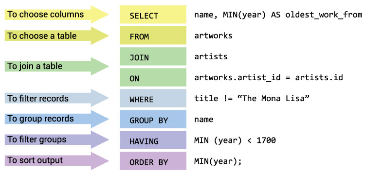

TP6 : SQL requête SELECT dans une table,
objectif
Objectif : Champs calculés et utilisation de fonctions (agrégation, regroupement)
synthèse sur des éléments abordés :
SELECT [DISTINCT] [nom_table.nom_champs, nom_table.nom_champs2.....] [champs calculés] [fonctions agrégation]
FROM
nom_table1, nom_table2 ….
WHERE [conditions, jointure … ]
[GROUP BY]
[HAVING]
[ORDER BY nom_table.nom_champs] [DESC];
[LIMIT]
Exemple champ calculé : [ nom_table.nom_champs]*3 AS nom_champ_calcule
Faire une opération avec un champ : SUM( ) COUNT( ) AVG( ) MIN( ) MAX( )
rajouter GROUP BY nom_du_champ_sur_lequel_on_fait_l_operation [champs calculés]
HAVING nom_champ_calcule ...
ATTENTION à l’ordre des instructions

- Utiliser la table du tp précédent
Requêtes
requête 1.1 et 1.2 : requête avec un/des champ(s) calculé(s), utilisation d’ un « ALIAS »
Requête 1-1 :
tester la requête suivante (le mot clé AS est optionnel)
SELECT nom, note_ue1 , note_ue1*2 AS note_ue1_sur_40
FROM Etudiant
WHERE note_ue1 >= 14
ORDER BY note_ue1;
- Écrire une requête pour calculer la moyenne des étudiants
((note ue1 + note ue2) /2 ) ; Afficher cette moyenne et la note de l’ue1 lorsque la note de l’ue1 est supérieure ou égale à 14. Trier le résultat par groupe décroissant puis par moyenne d’UE décroissante)
+-----------+-----------+----------+------------+
| nom | groupe_id | note_ue1 | Moyenne_UE |
+-----------+-----------+----------+------------+
| KENDE | 3 | 15.00 | 11.250000 |
| BOISSENIN | 2 | 15.50 | 16.000000 |
| COULON | 2 | 17.00 | 11.750000 |
| PEQUIGNOT | 1 | 17.50 | 13.500000 |
| RIGOULOT | 1 | 15.00 | 12.750000 |
+-----------+-----------+----------+------------+
Requête 1-2 :
Écrire une requête pour calculer la moyenne des étudiants ((note ue1 + note ue2) /2 ) et sélectionner uniquement les moyennes supérieures ou égales à 13 (trier par note puis par groupe)
+-----------+-----------+------------+
| nom | groupe_id | Moyenne_UE |
+-----------+-----------+------------+
| BOISSENIN | 2 | 16.000000 |
| DUPONT | 4 | 14.350000 |
| KLEIN | 3 | 14.000000 |
| PEQUIGNOT | 1 | 13.500000 |
| DELANOE | 1 | 13.500000 |
| RIOT | 2 | 13.000000 |
+-----------+-----------+------------+
Requête 2 : champs calculés ou concaténation d’éléments
SELECT CONCAT('année :',YEAR(NOW())) ;
SELECT CONCAT('année :',YEAR(NOW())) AS TEST;
SELECT CONCAT('mois :',MONTH(NOW()), ' - jour :', DAY(NOW())) AS TEST2;
Sur le même principe afficher le nom des étudiants et leur date de naissance au format JJ/MM/AAAA. Afficher uniquement les étudiants dont l’année de naissance est supérieure ou égale à 2004. Trier le résultat par date de naissance de façon décroissante.
+-----------+-------------------+
| nom | Date_Naissance_FR |
+-----------+-------------------+
| BOISSENIN | 9/8/2004 |
| PRETTOT | 12/7/2004 |
| RIOT | 6/6/2004 |
| BERNARD | 1/1/2004 |
| CHAVEAUX | 1/1/2004 |
+-----------+-------------------+
* selon les mises à jour, votre résultat peut être différent
Remarque :
requête 3 : utilisation de fonctions « d’agrégation » et d’un regroupement :
L’instruction « GROUP BY » est souvent utilisé avec les fonctions d’agrégation (COUNT, MAX, MIN, SUM, AVG) pour regrouper les résultats par une ou plusieurs colonnes. ( https://www.w3schools.com/SQL/sql_groupby.asp )
Tester la requête pour compter le nombre d’étudiants par groupe :
SELECT COUNT(Etudiant.idEtudiant) AS Nbre_etudiants, Etudiant.groupe_id
FROM Etudiant
GROUP BY Etudiant.groupe_id;

Modifier la requête et tester avec et sans le code barré :

- les champs barrés, sont ils nécessaires ? Pourquoi ? Peut on mettre qu’un seul champ derrière le mot clé «GROUP BY » dans ce cas ?
Modifier la requête et tester avec et sans le code barré :

les champs barrés, sont ils nécessaires ? Pourquoi ? Peut on mettre qu’un seul champ derrière la fonction d’agrégation dans ce cas ?
Autre exemple avec beaucoup de fonction d’agrégation :

La documentation sur internet ne manque pas :
requête 4.1, 4.2, 4.3 : utilisation de fonctions « d’agrégation » et d’un regroupement
- Écrire la requête pour compter le nombre d’étudiants qui habitent le territoire de Belfort et qui sont des hommes, ordonné par codes postales puis par sexes. Résultats (faire 3 requêtes) :
+----------------+-------------+------+
| Nbre_etudiants | code_postal | sexe |
+----------------+-------------+------+
| 7 | 90000 | H |
| 4 | 90120 | H |
| 7 | 90300 | H |
+----------------+-------------+------+
- afficher le nombre d’étudiants qui habitent le territoire de Belfort et leurs sexes
Résultat :
+----------------+------+
| Nbre_etudiants | sexe |
+----------------+------+
| 4 | F |
| 18 | H |
+----------------+------+
- afficher le nombre d’étudiants qui habitent le territoire de Belfort et qui sont des hommes
Résultat :
+----------------+
| Nbre_etudiants |
+----------------+
| 18 |
+----------------+
requête 5 : utilisation de fonctions « d’agrégation » et d’un regroupement
- Écrire la requête pour compter le nombre d’étudiants qui habitent en Franche Comté. (département le 90 le 25 le 39 le 70)
Résultat :
+---------------------------------+
| Nbre_etudiants_de_franche_comte |
+---------------------------------+
| 26 |
+---------------------------------+
requête 6 : utilisation de fonctions « d’agrégation » et d’un regroupement
Sur le même principe calculer la moyenne des UE ainsi que la moyenne des 2 UE : pour chaque groupe et chaque semestre différents (trier par semestre puis par groupe).
- Utiliser dans un deuxième temps, la fonction Format pour arrondir à 2 chiffres après la virgule. (unités d’enseignement : informatique et enseignement général, le plus souvent)
Résultat :
+-------------+-------------+---------+-----------+-------------+
| moyenne_ue1 | moyenne_ue2 | moyenne | groupe_id | semestre_id |
+-------------+-------------+---------+-----------+-------------+
| 12.50 | 11.19 | 11.84 | 1 | 1 |
| 13.13 | 11.75 | 12.44 | 2 | 1 |
| 8.94 | 11.96 | 10.45 | 3 | 1 |
| 11.63 | 11.24 | 11.43 | 1 | 2 |
| 12.50 | 8.43 | 10.46 | 2 | 2 |
| 12.80 | 10.10 | 11.45 | 3 | 2 |
| 10.47 | 14.42 | 12.44 | 4 | 3 |
+-------------+-------------+---------+-----------+-------------+
requête 7 (ALTER TABLE puis UPDATE)
Rajouter un champ de nom « resultat_semestre »dans la table pour y insérer le résultat du semestre : ce champ est de type chaîne de caractères pour y placer les chaînes de caractères suivantes : ‘ADM’,‘ADJ’,‘ADC’,‘ATT’,‘NV’,‘EXC’ .
Écrire une requête qui modifie le champ à la valeur ‘ADM’ si les 2 UEs ont une note supérieure à 8 et la moyenne vaut plus de 10
Compter le nombre d’étudiants qui ont validé le semestre.
Résultat :
+---------------------------------+
| nombre_admis_hors_decision_jury |
+---------------------------------+
| 21 |
+---------------------------------+
requête 8
Écrire une requête pour compter les étudiants qui sont majeurs. Commencer par tester la requête ci dessous :
SELECT date_naissance
,DATE_ADD(date_naissance,INTERVAL 18 YEAR) AS plus18
,DATEDIFF(curdate(),DATE_ADD(date_naissance,INTERVAL 18 YEAR)) AS diff_jours_majorite
FROM Etudiant ;
requête 9 (Utiliser des conditions imbriqués)
Créer une requête pour afficher le nom des étudiants, leurs notes, la moyenne de leurs notes et un champ calculé avec le résultat du semestre : « DECISION ». Ce champ vaut (‘ADM’,‘UE1 validé – Jury’,‘UE2 validé – Jury’,’Jury’).
- Ce champ a la valeur ‘ADM’ si les 2 UEs ont une note supérieure à 8 et la moyenne vaut plus de 10.
- Ce champ a la valeur ‘UE1 validé – Jury’ ou ‘UE2 validé – Jury’ si une note de 2 UEs est >=10 mais la moyenne des 2 notes ne fait pas 10.
- Sinon ce champ vaut ‘Jury’
Commencer par tester les 3 requêtes ci-dessous :
SELECT IF(note_ue1>=10 ,"UE1 validé - Jury","Jury") AS DECISION, nom
FROM Etudiant;
SELECT IF(note_ue2>=10 ,"UE2 validé","Jury") AS DECISION, nom
FROM Etudiant;
SELECT IF(note_ue1>=8 AND note_ue2 >=8 AND (note_ue1+note_ue2)>20,"ADM","Jury") AS DECISION, nom
FROM Etudiant;